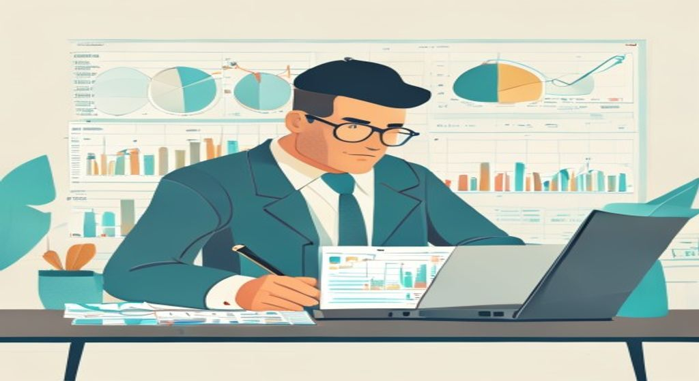
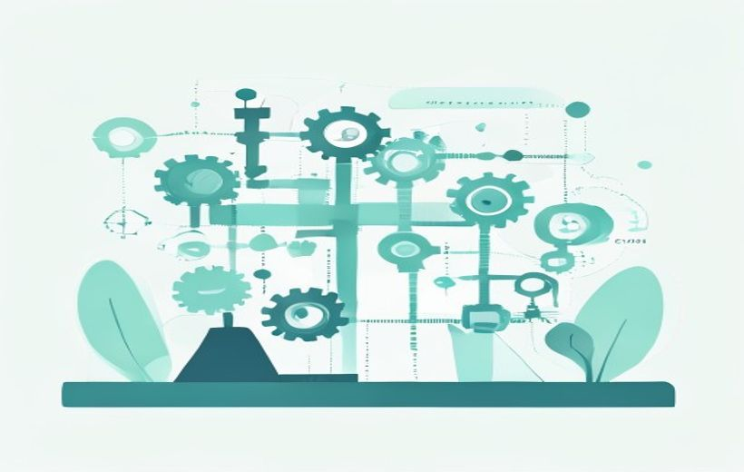
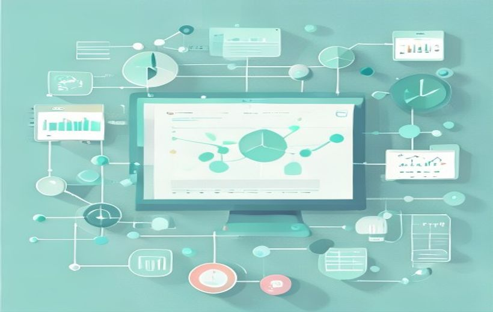

Qué es la IC en una pincelada, y luego a fondo lo que de verdad cae: cómo se clasifica la investigación, qué IMPACTOS estratégicos tiene en la empresa, y las nuevas tendencias (internacionalización, microtendencias, marca y tecnologías emergentes).

La investigación comercial: convertir datos en decisiones inteligentes para la empresa.
La investigación comercial es el proceso sistemático que reduce la incertidumbre al decidir; y en el examen lo importante es saber clasificarla (por propósito y por técnica) y, sobre todo, conocer los impactos estratégicos que produce en la empresa y las tendencias actuales.
🧠 Los conceptos
Despliega cada tarjeta, léela con calma y márcala como entendida. La barra de arriba irá subiendo. Las tarjetas con la etiqueta CAE son las que el profesor ha marcado para el examen del 8-jun.
Antes de entrar en lo que cae, una base mínima: la investigación comercial (IC) es una de las herramientas fundamentales para tomar decisiones estratégicas en marketing y comunicación. Su función esencial es generar conocimiento profundo y estructurado sobre los mercados, los consumidores y los entornos competitivos, con el objetivo de reducir la incertidumbre en las decisiones empresariales.
Es un proceso sistemático que combina técnicas cualitativas y cuantitativas, y que permite identificar oportunidades, anticipar tendencias y evaluar la viabilidad de proyectos o acciones comerciales.
La IC se puede clasificar de dos maneras (apartado 1.4): según el propósito que persigue y según la técnica que emplea. No son listas que compiten, sino enfoques complementarios.
Según el propósito
Según qué se busca conseguir, hay tres tipos principales. La fuente lo resume en una pirámide: primero explorar, luego describir, luego explicar.

La Tabla 3 de la presentación da el ejemplo español de cada uno:
| Tipo | Objetivo principal | Ejemplo aplicado en España |
|---|---|---|
| Exploratoria | Identificar problemas o hipótesis | AEDEMO: focus groups sobre nuevas tendencias de consumo en jóvenes |
| Descriptiva | Medir características de un mercado | CIS: barómetro sobre hábitos de consumo cultural |
| Causal | Determinar relaciones de causa-efecto | Experimento sobre el impacto de las etiquetas "eco" en productos de alimentación |
Según la técnica
La segunda forma de clasificar atiende a las técnicas empleadas. No son competidoras: se complementan para dar una visión integral del mercado.
| Técnicas cualitativas | Técnicas cuantitativas | |
|---|---|---|
| ¿Qué buscan? | Interpretar y comprender en profundidad comportamientos, percepciones y motivaciones (el por qué) | Recoger datos numéricos para hacer análisis estadísticos, identificar patrones y extrapolar (el cuánto) |
| Métodos | Entrevistas en profundidad, grupos de discusión, análisis de contenido en medios digitales | Encuestas, paneles, mediciones que permiten generalizar a una población amplia |
| Cuándo usarlas | Fases iniciales, cuando hay matices que no se pueden expresar con números | Cuando hay que cuantificar y extrapolar a una población más amplia |
| Ejemplo de la fuente | Captar matices de un comportamiento incipiente antes de cuantificarlo | Estudios de notoriedad de marca: % de consumidores que recuerdan una marca (espontánea o sugerida) |
Entramos en el apartado 1.5, el del examen. La IC no es solo "tener datos": es un soporte estratégico que tiene aplicaciones concretas por sectores e impactos de distinto calado en la empresa.
Soporte a la innovación y alerta temprana
La fuente destaca dos funciones grandes:
Aplicaciones por sectores (Tabla 4)
Esta tabla muestra cómo cada sector español usa la IC como herramienta estratégica. Es muy típica de pregunta práctica: "dame un sector y di qué investigación aplica y qué consigue".
| Sector | Tipo de investigación aplicada | Resultado estratégico |
|---|---|---|
| Turismo | Estudios de satisfacción del visitante | Mejora de servicios en destinos como Barcelona y Baleares |
| Alimentación | Paneles de consumo | Innovación en marcas de gran distribución (ej. Mercadona, DIA) |
| Telecomunicaciones | Encuestas de fidelización | Estrategias de retención en Telefónica y Orange España |
| Retail | Análisis de big data | Optimización de surtido en cadenas como El Corte Inglés |
Los 6 impactos estratégicos (Tabla 5)
Esta es LA parte estrella del tema. El profesor preguntó explícitamente "¿qué impactos tiene la IC?". La respuesta es la Tabla 5: una tipología de impactos según el tipo de transformación que la IC habilita en la empresa (operativa, táctica, estructural...).

| Tipo de impacto | Ejemplo de aplicación | Transformación que habilita |
|---|---|---|
| Operativo | Ajustes en la experiencia del cliente tras analizar el customer journey | Mejora inmediata en procesos o interfaces de contacto |
| Táctico | Modificación de campañas publicitarias según métricas post-test | Optimización de inversiones y adaptación de mensajes |
| Estructural | Transición a modelos de negocio por suscripción a partir del análisis de uso | Redefinición del modelo de creación y captura de valor |
| Preventivo | Identificación de riesgos en mercados internacionales mediante vigilancia | Anticipación de escenarios y planes de contingencia |
| Prospectivo | Incorporación de tendencias sostenibles tras estudios de percepción social | Innovación alineada con cambios normativos y expectativas culturales |
| Coordinador | Reorganización logística según hallazgos sobre las prioridades del cliente | Sincronización interdepartamental en torno a una visión basada en datos |
Apartado 1.7, también del examen. La IC actual abre cuatro frentes de innovación y tendencias:
| Aportación | Qué hace | Ejemplo de la fuente |
|---|---|---|
| Internacionalización | Reduce la elevada incertidumbre de entrar en mercados desconocidos (regulación, cultura, hábitos, competencia, canales) | Empresas de alimentación que, antes de entrar en Asia, estudian preferencias de sabor, formatos y percepción de origen, y ajustan formulación, etiquetado y comunicación |
| Microtendencias | Detección temprana de patrones de consumo incipientes en segmentos pequeños que pueden volverse masivos → ventaja del "early adopter" | Bebidas funcionales: marcas que añadieron pronto adaptógenos y prebióticos captaron un nicho fiel antes que la competencia |
| Valor de marca (brand equity) | Mide la fuerza de la marca en la mente del consumidor: reconocimiento, preferencia, lealtad y percepción de calidad (no solo ventas a corto plazo) | Tecnológicas que, con estudios de notoriedad y percepción de atributos, demuestran ser "más innovadoras" y justifican precios superiores |
| Impacto multicanal | Evalúa cómo interactúa el consumidor con la marca en todos los puntos de contacto (tienda, app, redes, email) para una experiencia coherente | Retail que cruza datos de fidelización + navegación online + observación en tienda y descubre patrones de compra cruzada |
Figura 5 — Las 4 tecnologías emergentes que potencian todo lo anterior:
| Tecnología | Qué aporta a la IC |
|---|---|
| Inteligencia Artificial (IA) | Automatiza el análisis y detecta patrones invisibles para los métodos tradicionales |
| Big Data | Procesa grandes volúmenes de información de fuentes diversas (transacciones, redes sociales…) — ej. big data en turismo |
| Neuromarketing | Mide respuestas del consumidor a nivel de percepción — ej. publicidad de L'Oréal España |
| Analítica predictiva | Anticipa la demanda y los comportamientos futuros (ej. retail que predice demanda y optimiza inventarios) |
🃏 Flashcards
Toca cada tarjeta para girarla. Tapa la definición con la mano y comprueba si te la sabes. Todas son del contenido que cae (1.4, 1.5/impactos, 1.7).
✅ Test rápido
6 preguntas tipo examen sobre lo que cae. Elige una opción y te corrige al momento con la explicación.
⭐ Preguntas del final de la presentación
La presentación oficial no incluía preguntas de autoevaluación en sus diapositivas finales. Se incluyen 3 preguntas de práctica (resueltas desde la fuente ESIC) del tipo que cae el 8-jun: teórico-prácticas para aplicar a un caso, sobre el contenido marcado.
Se combinarían los tres tipos según el propósito, en fases sucesivas (son enfoques complementarios, Malhotra 2020):
Conclusión: exploratoria = ¿qué hay?; descriptiva = ¿cuánto hay?; causal = ¿la etiqueta provoca más ventas?
La Tabla 5 clasifica los impactos según el tipo de transformación que la IC habilita en la organización:
En resumen, la IC impacta desde lo más inmediato (operativo) hasta lo más profundo (estructural) y transversal (coordinador). Adaptado de Arosa y Chica Mesa (2021).